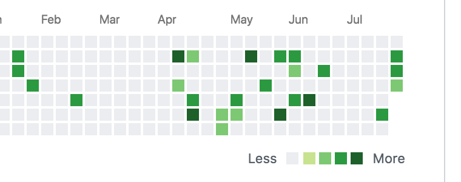

title: GitHub （一）
date: 2018-07-25 14:01:09
tags:
这篇就解决一个问题: 为什么在 GitHub 上提交了代码，然而上面的格子却没有变成绿色 ？
我提交 Git 的时间应该还是算比较频繁的，但是发现一个问题，就是今天提交了，但是格子却没有变成绿色，先前一直没有注意这个问题

其实我基本上每天都是有一些提交的，但是就是不显示绿色 …
但我还是发现了规律，如果我创建过 Git 仓库，那么那天就会变成绿色，我傻傻的以为，这个格子只有在创建了仓库之后才会变成绿色，😶
原因就一句话：GitHub 上绑定的邮箱和 Git 提交的邮箱不一致，我之前本地因为工作的原因全局设置了 @163 的邮箱，但是 GitHub 上绑定的是 @gmail 邮箱。
修改完成后，提交一下，就可以看到绿色的格子了 … 有些事你还真得多想想！
maple @ iMac in ~/Maple [14:30:37]
git config user.email
18576759510@163.com
maple @ iMac in ~/Maple [14:30:45]
git config --global user.email 'huidragonaijy@gmail.com'
maple @ iMac in ~/Maple [14:31:08]
git config user.email
huidragonaijy@gmail.com
上面的命令：